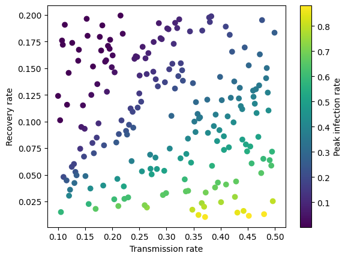
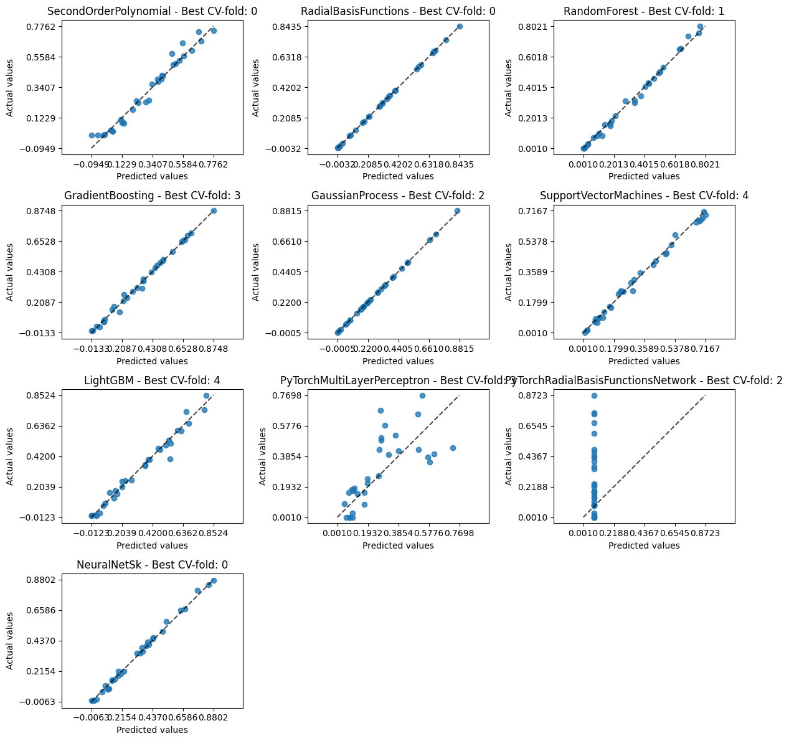
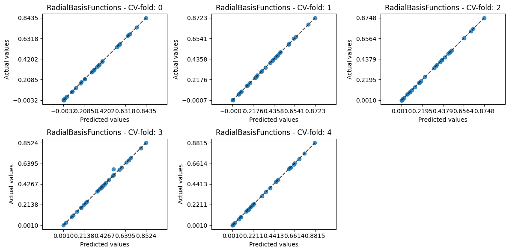
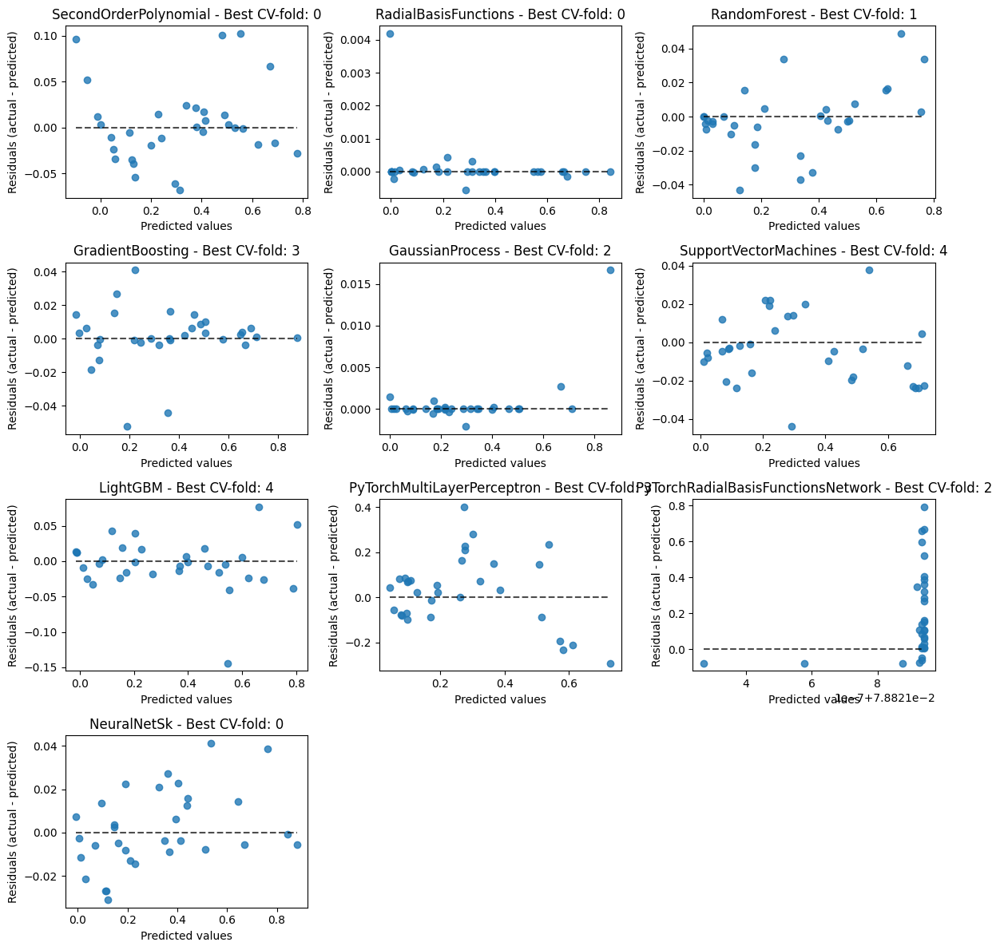
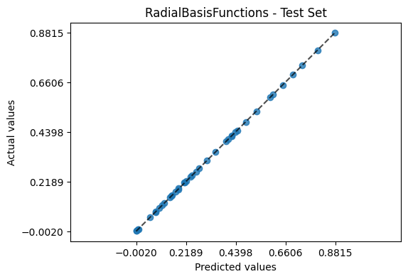

A deeper dive into AutoEmulate#
Why AutoEmulate#
Simulations of real-world physical, chemical or biological processes can be complex and computationally expensive, and will often need high-performance computing resources and a lot of time to run. This becomes a problem when simulations need to be run thousands or tens of thousands of times to do uncertainty quantification or sensitivity analysis. It’s also a problem when a simulation needs to run fast enough to be useful in real-world or real-time applications, such as digital twins.
Emulator models are drop-in replacements for complex simulations, and can be orders of magnitude faster. Any model could be an emulator in principle, from a simple linear regression to Gaussian Processes to Neural Networks. Evaluating all these models requires time and machine learning expertise. AutoEmulate is designed to automate the process of finding a good emulator model for a simulation.
In the background, AutoEmulate does input processing, cross-validation, hyperparameter optimization and model selection. It’s different from typical AutoML packages, as the choice of models and hyperparameter search spaces is optimised for typical emulation problems. Over time, we expect the package to further adapt to the emulation needs of the community.
Workflow#
A typical workflow will involve
generating data from a simulation
running
AutoEmulateevaluating results
refitting the emulator model on the full data
saving and loading the emulator.
import numpy as np
import pandas as pd
import matplotlib.pyplot as plt
from autoemulate.experimental_design import LatinHypercube
from autoemulate.simulations.epidemic import simulate_epidemic
from autoemulate.compare import AutoEmulate
/opt/hostedtoolcache/Python/3.11.8/x64/lib/python3.11/site-packages/autoemulate/compare.py:15: TqdmExperimentalWarning: Using `tqdm.autonotebook.tqdm` in notebook mode. Use `tqdm.tqdm` instead to force console mode (e.g. in jupyter console)
from tqdm.autonotebook import tqdm
1) Experimental Design (Sampling)#
Let’s first generate a set of inputs/outputs. We’ll use a simple simulator for the spread of infectious diseases based on the SIR model (see here for details). For simplicity, we assume a population size of 1000 individuals and start with 1 infected person. The simulator takes two inputs, the transmission rate per day and the recovery rate per day and outputs the peak infection rate.
We sample 200 sets of inputs X using a Latin Hypercube and run the simulator for those inputs to get a vector of outputs y.
seed = 42
np.random.seed(seed)
beta = (0.1, 0.5) # lower and upper bounds for the transmission rate
gamma = (0.01, 0.2) # lower and upper bounds for the recovery rate
lhd = LatinHypercube([beta, gamma])
X = lhd.sample(200)
y = np.array([simulate_epidemic(x) for x in X])
print(f"shapes: input X: {X.shape}, output y: {y.shape}\n")
print(f"X: {np.round(X[:3], 2)}\n")
print(f"y: {np.round(y[:3], 2)}\n")
shapes: input X: (200, 2), output y: (200,)
X: [[0.29 0.18]
[0.13 0.04]
[0.16 0.12]]
y: [0.09 0.31 0.03]
The general shape of the input data is a matrix X and a matrix (or vector) y where each row represents one run of the simulation and each column is a different input parameter. So in the example above, 0.29 and 0.18 are the two input parameters beta and gamma for the first run of the simulation, and 0.09 (peak transmission rate) is the output.
Note: The package currently only works with scaler inputs.
Let’s now plot the simulated data to see how the pattern looks like. As we might guess intuitively, the peak infection rate is higher when the transmission rate increases and the recovery rate decreases.
transmission_rate = X[:, 0]
recovery_rate = X[:, 1]
plt.scatter(transmission_rate, recovery_rate, c=y, cmap='viridis')
plt.xlabel('Transmission rate')
plt.ylabel('Recovery rate')
plt.colorbar(label="Peak infection rate")
plt.show
<function matplotlib.pyplot.show(close=None, block=None)>

2) Emulation#
A real world epidemic simulation will be computationally expensive and will take a long time to run. To evaluate the peak infection rate for thousands of different combinations of input parameters, it would be practical to to create a fast emulator model, which can then be used to predict the peak infection rate for new input parameters.
The simplest way to test different emulators is to run AutoEmulate with default parameters, providing only inputs X and outputs y. What happens in the background is that the inputs will be standardised (scale=True), after which various models are fitted and evaluated using 5-fold cross-validation.
em = AutoEmulate()
em.setup(X, y)
best_model = em.compare()
AutoEmulate is set up with the following settings:
| Values | |
|---|---|
| Simulation input shape (X) | (200, 2) |
| Simulation output shape (y) | (200,) |
| # hold-out set samples (test_set_size) | 40 |
| Do hyperparameter search (param_search) | False |
| Type of hyperparameter search (search_type) | random |
| # sampled parameter settings (param_search_iters) | 20 |
| Scale data before fitting (scale) | True |
| Scaler (scaler) | StandardScaler |
| Dimensionality reduction before fitting (reduce_dim) | False |
| Dimensionality reduction method (dim_reducer) | PCA |
| Cross-validation strategy (cross_validator) | KFold |
| # parallel jobs (n_jobs) | 1 |
3) Evaluation#
We can print the results to see that several models have a high \(R^2\) and root mean squared error, suggesting a good fit. These metrics are the average metric on the test data across cv-folds.
em.print_results()
Average cross-validation scores:
| model | short | r2 | rmse | |
|---|---|---|---|---|
| 0 | RadialBasisFunctions | rbf | 0.9994 | 0.0039 |
| 1 | GaussianProcess | gp | 0.9966 | 0.0131 |
| 2 | SupportVectorMachines | svm | 0.9894 | 0.0239 |
| 3 | GradientBoosting | gb | 0.9833 | 0.0300 |
| 4 | RandomForest | rf | 0.9784 | 0.0337 |
| 5 | NeuralNetSk | nns | 0.9779 | 0.0321 |
| 6 | SecondOrderPolynomial | sop | 0.9725 | 0.0368 |
| 7 | LightGBM | lgbm | 0.9615 | 0.0462 |
| 8 | PyTorchMultiLayerPerceptron | ptmlp | -2.9713 | 0.3942 |
| 9 | PyTorchRadialBasisFunctionsNetwork | ptrbfn | -6.6143 | 0.6019 |
We can also look at each of the cv-folds for a specific model, like Gaussian Processes.
em.print_results(model="RadialBasisFunctions")
Scores for RadialBasisFunctions across cv-folds:
| metric | r2 | rmse |
|---|---|---|
| fold | ||
| 0 | 1.0000 | 0.0011 |
| 1 | 0.9998 | 0.0028 |
| 2 | 1.0000 | 0.0010 |
| 3 | 0.9976 | 0.0111 |
| 4 | 0.9998 | 0.0033 |
Next, we can plot predicted vs true values. If the simulation has multiple outputs, the default is to plot the first output (output_index=0), but this can be changed. by default, plot_results() plots the best fitting cv-fold for each model.
em.plot_results()

To inspect specific models more closely, we can plot the predictions for each cv fold for a given model.
em.plot_results(model='RadialBasisFunctions')

We can alternatively plot a residuals plot to inspect how residuals vary with predictions.
em.plot_results(plot="residual")

5) Evaluate the emulator#
em.compare() above returned the best emulator model. Let’s see how it performs on the holdout-set.
em.evaluate_model(best_model)
| model | short | rmse | r2 | |
|---|---|---|---|---|
| 0 | RadialBasisFunctions | rbf | 0.001 | 1.0 |
We can again plot the holdout set performance for the best model.
em.plot_model(best_model)

We can also have a look at the model parameters
best_model.get_params()
{'memory': None,
'steps': [('scaler', StandardScaler()), ('model', RadialBasisFunctions())],
'verbose': False,
'scaler': StandardScaler(),
'model': RadialBasisFunctions(),
'scaler__copy': True,
'scaler__with_mean': True,
'scaler__with_std': True,
'model__degree': 1,
'model__epsilon': 1.0,
'model__kernel': 'thin_plate_spline',
'model__smoothing': 0.0}
4) Refitting the model on the full dataset#
AutoEmulate splits the dataset into a training and holdout set. All cross-validation, parameter optimisation and model selection is done on the training set. After we selected a best emulator model, we can refit it on the full dataset.
best_emulator = em.refit_model(best_model)
Let’s now try to predict the peak infection rate for a new set of transmission and recovery rates. Because our emulator is much faster then the original simulation, we can now evaluate the peak infection rate for a much larger set of input parameters.
seed = 42
np.random.seed(seed)
beta = (0.1, 0.5) # lower and upper bounds for the transmission rate
gamma = (0.01, 0.2) # lower and upper bounds for the recovery rate
lhd = LatinHypercube([beta, gamma])
X_new = lhd.sample(1000)
y_new = best_emulator.predict(X_new)
And let’s do another plot:
transmission_rate = X_new[:, 0]
recovery_rate = X_new[:, 1]
plt.scatter(transmission_rate, recovery_rate, c=y_new, cmap='viridis')
plt.xlabel('Transmission rate')
plt.ylabel('Recovery rate')
plt.colorbar(label="Peak infection rate")
plt.show
<function matplotlib.pyplot.show(close=None, block=None)>
4) Saving / Loading#
We can save and load the model using em.save_model() and em.load_model(). The model is saved using joblib.dump. Next to the model, there is also a _meta.json file which specifies the required dependencies and should be present when loading the model to check that the correct package versions are installed.
# em.save_model(best_emulator, "best_emulator")
# best_emulator_loaded = em.load_model("best_emulator")
Hyperparameter search#
Although we tried to chose default model parameters that work well in a wide range of scenarios, hyperparameter search will often find an emulator model with a better fit. Internally, AutoEmulate compares the performance of different models and hyperparameters using cross-validation on the training data, which can be computationally expensive and time-consuming for larger datasets. To speed it up, we can parallelise the process with n_jobs.
For each model, we’ve pre-defined a search space for hyperparameters. When setting up AutoEmulate with param_search=True, we default to using random search with param_search_iters = 20 iterations. The alternative is param_search_method = "bayes" which uses a Bayesian optimisation method (see here for details).
Let’s do a hyperparameter search for the Gaussian Process and Random Forest models.
em = AutoEmulate()
em.setup(X, y, param_search=True, param_search_type="random", param_search_iters=20, model_subset=["GaussianProcess", "RandomForest"], n_jobs=-2) # n_jobs=-2 uses all cores but one
em.compare()
AutoEmulate is set up with the following settings:
| Values | |
|---|---|
| Simulation input shape (X) | (200, 2) |
| Simulation output shape (y) | (200,) |
| # hold-out set samples (test_set_size) | 40 |
| Do hyperparameter search (param_search) | True |
| Type of hyperparameter search (search_type) | random |
| # sampled parameter settings (param_search_iters) | 20 |
| Scale data before fitting (scale) | True |
| Scaler (scaler) | StandardScaler |
| Dimensionality reduction before fitting (reduce_dim) | False |
| Dimensionality reduction method (dim_reducer) | PCA |
| Cross-validation strategy (cross_validator) | KFold |
| # parallel jobs (n_jobs) | -2 |
---------------------------------------------------------------------------
KeyboardInterrupt Traceback (most recent call last)
Cell In[17], line 3
1 em = AutoEmulate()
2 em.setup(X, y, param_search=True, param_search_type="random", param_search_iters=20, model_subset=["GaussianProcess", "RandomForest"], n_jobs=-2) # n_jobs=-2 uses all cores but one
----> 3 em.compare()
File /opt/hostedtoolcache/Python/3.11.8/x64/lib/python3.11/site-packages/autoemulate/compare.py:216, in AutoEmulate.compare(self)
213 try:
214 # hyperparameter search
215 if self.param_search:
--> 216 self.models[i] = _optimize_params(
217 X=self.X[self.train_idxs],
218 y=self.y[self.train_idxs],
219 cv=self.cross_validator,
220 model=model,
221 search_type=self.search_type,
222 niter=self.param_search_iters,
223 param_space=None,
224 n_jobs=self.n_jobs,
225 logger=self.logger,
226 )
228 # run cross validation
229 fitted_model, cv_results = _run_cv(
230 X=self.X[self.train_idxs],
231 y=self.y[self.train_idxs],
(...)
236 logger=self.logger,
237 )
File /opt/hostedtoolcache/Python/3.11.8/x64/lib/python3.11/site-packages/autoemulate/hyperparam_searching.py:99, in _optimize_params(X, y, cv, model, search_type, niter, param_space, n_jobs, logger, error_score, verbose)
97 # run hyperparameter search
98 try:
---> 99 searcher.fit(X, y)
100 except Exception:
101 logger.exception(
102 f"Failed to perform hyperparameter search on {get_model_name(model)}"
103 )
File /opt/hostedtoolcache/Python/3.11.8/x64/lib/python3.11/site-packages/sklearn/base.py:1474, in _fit_context.<locals>.decorator.<locals>.wrapper(estimator, *args, **kwargs)
1467 estimator._validate_params()
1469 with config_context(
1470 skip_parameter_validation=(
1471 prefer_skip_nested_validation or global_skip_validation
1472 )
1473 ):
-> 1474 return fit_method(estimator, *args, **kwargs)
File /opt/hostedtoolcache/Python/3.11.8/x64/lib/python3.11/site-packages/sklearn/model_selection/_search.py:1008, in BaseSearchCV.fit(self, X, y, **params)
1006 refit_start_time = time.time()
1007 if y is not None:
-> 1008 self.best_estimator_.fit(X, y, **routed_params.estimator.fit)
1009 else:
1010 self.best_estimator_.fit(X, **routed_params.estimator.fit)
File /opt/hostedtoolcache/Python/3.11.8/x64/lib/python3.11/site-packages/sklearn/base.py:1474, in _fit_context.<locals>.decorator.<locals>.wrapper(estimator, *args, **kwargs)
1467 estimator._validate_params()
1469 with config_context(
1470 skip_parameter_validation=(
1471 prefer_skip_nested_validation or global_skip_validation
1472 )
1473 ):
-> 1474 return fit_method(estimator, *args, **kwargs)
File /opt/hostedtoolcache/Python/3.11.8/x64/lib/python3.11/site-packages/sklearn/pipeline.py:475, in Pipeline.fit(self, X, y, **params)
473 if self._final_estimator != "passthrough":
474 last_step_params = routed_params[self.steps[-1][0]]
--> 475 self._final_estimator.fit(Xt, y, **last_step_params["fit"])
477 return self
File /opt/hostedtoolcache/Python/3.11.8/x64/lib/python3.11/site-packages/autoemulate/emulators/gaussian_process.py:72, in GaussianProcess.fit(self, X, y)
62 self.model_ = GaussianProcessRegressor(
63 kernel=self.kernel,
64 alpha=self.alpha,
(...)
69 random_state=self.random_state,
70 )
71 with _suppress_convergence_warnings():
---> 72 self.model_.fit(X, y)
73 self.is_fitted_ = True
74 return self
File /opt/hostedtoolcache/Python/3.11.8/x64/lib/python3.11/site-packages/sklearn/base.py:1474, in _fit_context.<locals>.decorator.<locals>.wrapper(estimator, *args, **kwargs)
1467 estimator._validate_params()
1469 with config_context(
1470 skip_parameter_validation=(
1471 prefer_skip_nested_validation or global_skip_validation
1472 )
1473 ):
-> 1474 return fit_method(estimator, *args, **kwargs)
File /opt/hostedtoolcache/Python/3.11.8/x64/lib/python3.11/site-packages/sklearn/gaussian_process/_gpr.py:325, in GaussianProcessRegressor.fit(self, X, y)
322 for iteration in range(self.n_restarts_optimizer):
323 theta_initial = self._rng.uniform(bounds[:, 0], bounds[:, 1])
324 optima.append(
--> 325 self._constrained_optimization(obj_func, theta_initial, bounds)
326 )
327 # Select result from run with minimal (negative) log-marginal
328 # likelihood
329 lml_values = list(map(itemgetter(1), optima))
File /opt/hostedtoolcache/Python/3.11.8/x64/lib/python3.11/site-packages/sklearn/gaussian_process/_gpr.py:656, in GaussianProcessRegressor._constrained_optimization(self, obj_func, initial_theta, bounds)
654 def _constrained_optimization(self, obj_func, initial_theta, bounds):
655 if self.optimizer == "fmin_l_bfgs_b":
--> 656 opt_res = scipy.optimize.minimize(
657 obj_func,
658 initial_theta,
659 method="L-BFGS-B",
660 jac=True,
661 bounds=bounds,
662 )
663 _check_optimize_result("lbfgs", opt_res)
664 theta_opt, func_min = opt_res.x, opt_res.fun
File /opt/hostedtoolcache/Python/3.11.8/x64/lib/python3.11/site-packages/scipy/optimize/_minimize.py:713, in minimize(fun, x0, args, method, jac, hess, hessp, bounds, constraints, tol, callback, options)
710 res = _minimize_newtoncg(fun, x0, args, jac, hess, hessp, callback,
711 **options)
712 elif meth == 'l-bfgs-b':
--> 713 res = _minimize_lbfgsb(fun, x0, args, jac, bounds,
714 callback=callback, **options)
715 elif meth == 'tnc':
716 res = _minimize_tnc(fun, x0, args, jac, bounds, callback=callback,
717 **options)
File /opt/hostedtoolcache/Python/3.11.8/x64/lib/python3.11/site-packages/scipy/optimize/_lbfgsb_py.py:369, in _minimize_lbfgsb(fun, x0, args, jac, bounds, disp, maxcor, ftol, gtol, eps, maxfun, maxiter, iprint, callback, maxls, finite_diff_rel_step, **unknown_options)
363 task_str = task.tobytes()
364 if task_str.startswith(b'FG'):
365 # The minimization routine wants f and g at the current x.
366 # Note that interruptions due to maxfun are postponed
367 # until the completion of the current minimization iteration.
368 # Overwrite f and g:
--> 369 f, g = func_and_grad(x)
370 elif task_str.startswith(b'NEW_X'):
371 # new iteration
372 n_iterations += 1
File /opt/hostedtoolcache/Python/3.11.8/x64/lib/python3.11/site-packages/scipy/optimize/_differentiable_functions.py:296, in ScalarFunction.fun_and_grad(self, x)
294 if not np.array_equal(x, self.x):
295 self._update_x_impl(x)
--> 296 self._update_fun()
297 self._update_grad()
298 return self.f, self.g
File /opt/hostedtoolcache/Python/3.11.8/x64/lib/python3.11/site-packages/scipy/optimize/_differentiable_functions.py:262, in ScalarFunction._update_fun(self)
260 def _update_fun(self):
261 if not self.f_updated:
--> 262 self._update_fun_impl()
263 self.f_updated = True
File /opt/hostedtoolcache/Python/3.11.8/x64/lib/python3.11/site-packages/scipy/optimize/_differentiable_functions.py:163, in ScalarFunction.__init__.<locals>.update_fun()
162 def update_fun():
--> 163 self.f = fun_wrapped(self.x)
File /opt/hostedtoolcache/Python/3.11.8/x64/lib/python3.11/site-packages/scipy/optimize/_differentiable_functions.py:145, in ScalarFunction.__init__.<locals>.fun_wrapped(x)
141 self.nfev += 1
142 # Send a copy because the user may overwrite it.
143 # Overwriting results in undefined behaviour because
144 # fun(self.x) will change self.x, with the two no longer linked.
--> 145 fx = fun(np.copy(x), *args)
146 # Make sure the function returns a true scalar
147 if not np.isscalar(fx):
File /opt/hostedtoolcache/Python/3.11.8/x64/lib/python3.11/site-packages/scipy/optimize/_optimize.py:78, in MemoizeJac.__call__(self, x, *args)
76 def __call__(self, x, *args):
77 """ returns the function value """
---> 78 self._compute_if_needed(x, *args)
79 return self._value
File /opt/hostedtoolcache/Python/3.11.8/x64/lib/python3.11/site-packages/scipy/optimize/_optimize.py:72, in MemoizeJac._compute_if_needed(self, x, *args)
70 if not np.all(x == self.x) or self._value is None or self.jac is None:
71 self.x = np.asarray(x).copy()
---> 72 fg = self.fun(x, *args)
73 self.jac = fg[1]
74 self._value = fg[0]
File /opt/hostedtoolcache/Python/3.11.8/x64/lib/python3.11/site-packages/sklearn/gaussian_process/_gpr.py:297, in GaussianProcessRegressor.fit.<locals>.obj_func(theta, eval_gradient)
295 def obj_func(theta, eval_gradient=True):
296 if eval_gradient:
--> 297 lml, grad = self.log_marginal_likelihood(
298 theta, eval_gradient=True, clone_kernel=False
299 )
300 return -lml, -grad
301 else:
File /opt/hostedtoolcache/Python/3.11.8/x64/lib/python3.11/site-packages/sklearn/gaussian_process/_gpr.py:580, in GaussianProcessRegressor.log_marginal_likelihood(self, theta, eval_gradient, clone_kernel)
577 kernel.theta = theta
579 if eval_gradient:
--> 580 K, K_gradient = kernel(self.X_train_, eval_gradient=True)
581 else:
582 K = kernel(self.X_train_)
File /opt/hostedtoolcache/Python/3.11.8/x64/lib/python3.11/site-packages/sklearn/gaussian_process/kernels.py:1942, in RationalQuadratic.__call__(self, X, Y, eval_gradient)
1939 # gradient with respect to alpha
1940 if not self.hyperparameter_alpha.fixed:
1941 alpha_gradient = K * (
-> 1942 -self.alpha * np.log(base)
1943 + dists / (2 * self.length_scale**2 * base)
1944 )
1945 alpha_gradient = alpha_gradient[:, :, np.newaxis]
1946 else: # alpha is kept fixed
KeyboardInterrupt:
em.print_results()
Average cross-validation scores:
| model | r2 | rmse | |
|---|---|---|---|
| 0 | GaussianProcess | 0.9983 | 0.0093 |
| 1 | RandomForest | 0.9827 | 0.0300 |
Notes:
Some models, such as
GaussianProcesscan be slow to run hyperparameter search on larger datasets (say n > 5000).Use
model_subsetto only run hyperparameter search on a subset of models to speed up the process.When possible, use
n_jobsto parallelise the hyperparameter search. With larger datasets, we recommend settingparam_search_itersto a lower number, such as 5, to see how long it takes to run and then increase it if necessary.
Multioutput simulations#
All models run with multi-output data as well. Some models naively support multiple outputs. For models that don’t, AutoEmulate fits the model to each output separately under the hood. To see which models run separately for each output, we can check a model and see whether the pipeline includes a MultiOutputRegressor step. Note: all following metrics are averaged across outputs.
from autoemulate.simulations.projectile import simulate_projectile_multioutput
lhd = LatinHypercube([(-5., 1.), (0., 1000.)]) # (upper, lower) bounds for each parameter
X = lhd.sample(100)
y = np.array([simulate_projectile_multioutput(x) for x in X])
X.shape, y.shape
((100, 2), (100, 2))
em = AutoEmulate()
em.setup(X, y)
AutoEmulate is set up with the following settings:
| Values | |
|---|---|
| Simulation input shape (X) | (100, 2) |
| Simulation output shape (y) | (100, 2) |
| # hold-out set samples (test_set_size) | 20 |
| Do hyperparameter search (param_search) | False |
| Type of hyperparameter search (search_type) | random |
| # sampled parameter settings (param_search_iters) | 20 |
| Scale data before fitting (scale) | True |
| Scaler (scaler) | StandardScaler |
| Dimensionality reduction before fitting (reduce_dim) | False |
| Dimensionality reduction method (dim_reducer) | PCA |
| Cross-validation strategy (cross_validator) | KFold |
| # parallel jobs (n_jobs) | 1 |
If we print a model, say SVM, we can see that it’s wrapped in a MultiOutputRegressor, because it doesn’t natively support multioutput data.
print(em.models[5]) # print the 5th model
Pipeline(steps=[('scaler', StandardScaler()),
('model',
MultiOutputRegressor(estimator=SupportVectorMachines()))])
Custom standardisation, cross-validation and dimension reduction#
Standardisation#
AutoEmulate standardises inputs by default (scale=True) to have zero mean and unit variance. It uses scaler=StandardScaler() but other normalisers can be used, or the inputs can be left unscaled (scale=False). In addition, some models, like Gaussian Processes also standardise outputs, which makes them work better. Checking the parameters of a model with model.get_params() will show whether the model standardises outputs.
Dimension reduction#
When there are lots of input variables, it can be useful to reduce the dimensionality. To do this, we can add a dimension reduction step to each model using reduce_dim=True. Be default, this uses PCA from scikit-learn, but other dimension reduction methods can be used.
Cross-validation#
The default cross-validation method is 5-fold cross-validation using sklearn.model_selection.KFold. The parameters can be changed or other cross-validation methods can be used, see sklearn.model_selection splitter classes for details.
Example#
Let’s say we wanted to change to a MinMaxScaler, to do PCA but retain components explaining more than 99% of the variance and do KFold cross validation but with 3 splits and no shuffling. To do this, we can just import the respective classes from sklearn and pass them to setup().
### Example
from sklearn.preprocessing import MinMaxScaler
from sklearn.decomposition import PCA
from sklearn.model_selection import KFold
mmscaler = MinMaxScaler()
pca = PCA(0.99)
kfold = KFold(n_splits=3, shuffle=False)
em = AutoEmulate()
em.setup(X, y, scale=True, scaler=mmscaler, cross_validator=kfold)
best_model = em.compare()
AutoEmulate is set up with the following settings:
| Values | |
|---|---|
| Simulation input shape (X) | (100, 2) |
| Simulation output shape (y) | (100, 2) |
| # hold-out set samples (test_set_size) | 20 |
| Do hyperparameter search (param_search) | False |
| Type of hyperparameter search (search_type) | random |
| # sampled parameter settings (param_search_iters) | 20 |
| Scale data before fitting (scale) | True |
| Scaler (scaler) | MinMaxScaler |
| Dimensionality reduction before fitting (reduce_dim) | False |
| Dimensionality reduction method (dim_reducer) | PCA |
| Cross-validation strategy (cross_validator) | KFold |
| # parallel jobs (n_jobs) | 1 |
Note: Not all possible cross validators, scalers and decomposers have been tested and only a few make sense in the current version of AutoEmulate. If you encounter any issues, please open an issue on GitHub.